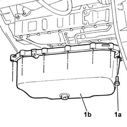

1020A24 CRANK CASE OIL SUMP - R + R CLEAN SEALS FOR SEALANT APPLICATION WITH ENGINE REMOVED
- Path
- Procedures > 10 ENGINE UNIT > 1020 CRANKCASE SUMP AND COVERS > 1020A CRANK CASE OIL SUMP > 1020A24 CRANK CASE OIL SUMP - R + R CLEAN SEALS FOR SEALANT APPLICATION WITH ENGINE REMOVED
- Kind
- repair procedure (removal / refitting; the operation number is the code)
- Applies to
- engines: 2.3 JTD 16V; all production periods
- Interactive page
- https://sloeber94.github.io/elrnDB-fDct/en/#/244000654
Applies to: engines: 2.3 JTD 16V; all production periods
 Removing
Removing
 Refitting
RefittingSee in Op. 1004D40
1. Undo the bolts (1a) and remove the engine block sump (1b).
- Separate the metal frame and the seal from the sump.

Applies to: engines: 2.3 JTD 16V; all production periods
Refitting
Removing- Clean the matching surfaces between
- Position the crankcase sump with the gasket and the metal frame and secure it tightening the bolts to the recommended torque.
 | Value - daNm | Fastening | Component | Ø |
|---|---|---|---|---|
. | 2.5 | Bolt | OIL SUMP | M8 X 1.25 |
| Value - daNm | Fastening | Component | Ø |
|---|---|---|---|---|
. | 1.5 | Bolt | OIL SUMP | M6 X 1 |
See in Op. 1004D40